15 Foundations of Mixed Modelling
15.1 Introduction
All our previous analyses assumed independence between observations. However, this assumption breaks down when:
- We make repeated measurements on individuals or groups
- We repeat experiments across different times or locations
- Samples are processed in batches (different days, machines, technicians)
- We use paired or matched designs
When observations are grouped in this way, measurements within the same group tend to be more similar to each other than to measurements from different groups. Ignoring this structure leads to incorrect conclusions.
15.2 What is a Mixed Model?
Mixed models extend linear regression by including two types of effects:
Fixed effects: Variables we are directly interested in testing (e.g., treatment, dose, temperature). We estimate specific coefficients for these predictors.
Random effects: Grouping factors that create non-independence (e.g., individual, batch, field site). Rather than estimating separate coefficients for each group, we estimate how much groups vary around an overall average.
Think of random effects as accounting for “nuisance variation” - variation we need to control for, but are not primarily interested in.
NoteWhen to use random effects
Use a variable as a random effect when:
- It is categorical with multiple levels (typically 5+)
- You want to generalise beyond the specific groups in your study
- Group sample sizes are unbalanced or some data are missing
- You are not interested in comparing specific groups to each other
15.2.1 The Study
This dataset comes from replicate feeding experiments investigating how Spodoptera frugiperda (Fall Army Worm) larvae respond to plant defensive compounds. Larvae were reared on artificial diet containing different concentrations of the benzoxazinoid DIMBOA, and researchers measured a composite detoxification capacity index.
Why replicate experiments? Larval responses can vary substantially between experimental batches due to factors like:
- Slight differences in rearing conditions
- Variation in larval age at testing
- Day-to-day environmental fluctuations
- Unmeasured genetic variation between cohorts
By running multiple independent replicates, researchers ensure their findings are robust and generalisable.
Variables:
benzo_um: Toxin concentration in diet (µM)detox_exp: Detoxification capacity index (higher = stronger response)group: Experimental replicate (1–5)
15.2.2 Visualising the Problem
If we ignore the group structure and plot all data together, we see an apparent positive relationship:
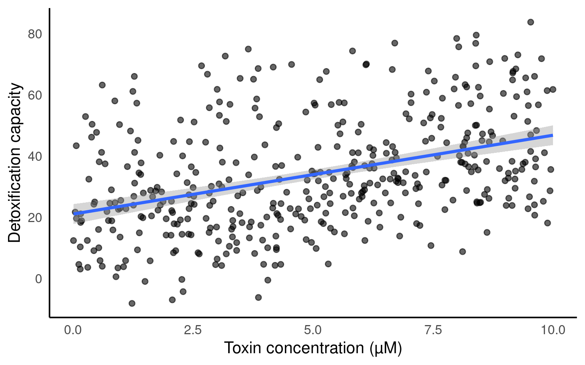
However, when we colour points by experimental batch, a more complex picture emerges:
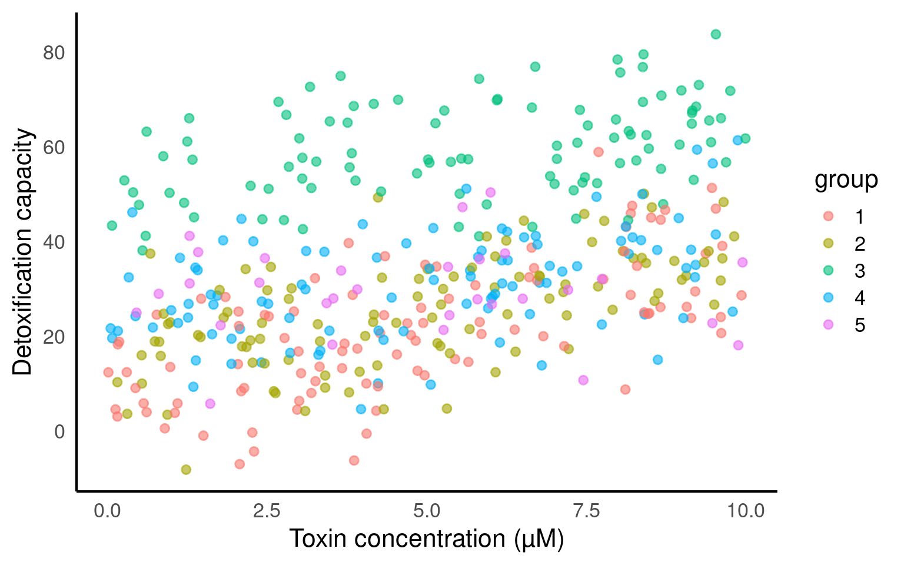
The groups differ substantially in their baseline detoxification capacity. Some batches show higher average responses than others, even at the same toxin concentration.
Explore group differences
Create a boxplot showing how detoxification capacity varies between experimental batches.
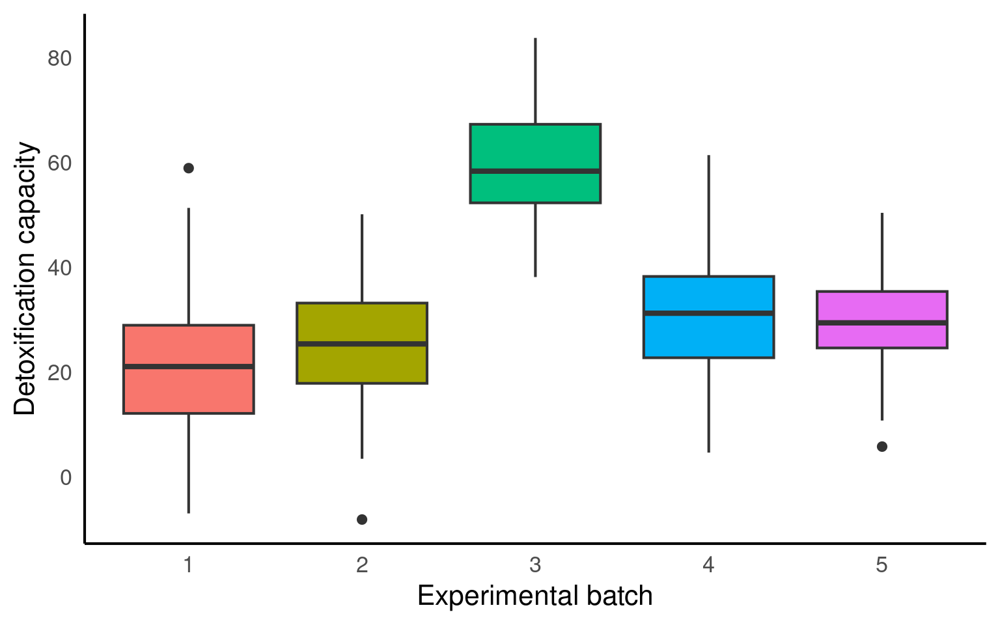
Group 2 has consistently higher detoxification capacity, whilst Group 4 is substantially lower. This batch-to-batch variation must be accounted for.
15.3 Three Approaches Compared
15.3.1 Approach 1: Pooled Model (Ignoring Groups)
This treats all observations as independent:
Call:
lm(formula = detox_exp ~ benzo_um, data = benzo_data)
Residuals:
Min 1Q Median 3Q Max
-37.23 -12.11 -2.36 11.00 44.53
Coefficients:
Estimate Std. Error t value Pr(>|t|)
(Intercept) 21.0546 1.6490 12.768 <2e-16 ***
benzo_um 2.5782 0.2854 9.034 <2e-16 ***
---
Signif. codes: 0 '***' 0.001 '**' 0.01 '*' 0.05 '.' 0.1 ' ' 1
Residual standard error: 16.96 on 428 degrees of freedom
Multiple R-squared: 0.1602, Adjusted R-squared: 0.1582
F-statistic: 81.62 on 1 and 428 DF, p-value: < 2.2e-16Problem: The standard errors are artificially small because we are treating 430 observations as independent when they are not. This inflates our confidence in the estimate.
15.3.2 Approach 2: Fixed-Effect Model
Include group explicitly as a predictor:
Call:
lm(formula = detox_exp ~ benzo_um + group, data = benzo_data)
Residuals:
Min 1Q Median 3Q Max
-26.3011 -6.3665 -0.3373 6.6295 31.5816
Coefficients:
Estimate Std. Error t value Pr(>|t|)
(Intercept) 11.7808 1.2931 9.111 < 2e-16 ***
benzo_um 2.0242 0.1704 11.883 < 2e-16 ***
group2 3.8771 1.4214 2.728 0.006642 **
group3 36.3036 1.4286 25.412 < 2e-16 ***
group4 9.2323 1.4215 6.495 2.33e-10 ***
group5 8.0609 2.0922 3.853 0.000135 ***
---
Signif. codes: 0 '***' 0.001 '**' 0.01 '*' 0.05 '.' 0.1 ' ' 1
Residual standard error: 10.05 on 424 degrees of freedom
Multiple R-squared: 0.7077, Adjusted R-squared: 0.7042
F-statistic: 205.3 on 5 and 424 DF, p-value: < 2.2e-16When this works well:
- Few groups (< 5)
- Large, balanced sample sizes per group
- You want to make inferences about these specific batches only
Limitations:
- Cannot generalise to future batches
- Uses many degrees of freedom estimating group differences
- Struggles with unbalanced designs or missing data
15.3.3 Approach 3: Mixed-Effects Model
Model group-to-group variation as random:
Linear mixed model fit by REML. t-tests use Satterthwaite's method [
lmerModLmerTest]
Formula: detox_exp ~ benzo_um + (1 | group)
Data: benzo_data
REML criterion at convergence: 3224.4
Scaled residuals:
Min 1Q Median 3Q Max
-2.61968 -0.63654 -0.03584 0.66113 3.13597
Random effects:
Groups Name Variance Std.Dev.
group (Intercept) 205 14.32
Residual 101 10.05
Number of obs: 430, groups: group, 5
Fixed effects:
Estimate Std. Error df t value Pr(>|t|)
(Intercept) 23.2692 6.4818 4.1570 3.59 0.0215 *
benzo_um 2.0271 0.1703 424.0815 11.90 <2e-16 ***
---
Signif. codes: 0 '***' 0.001 '**' 0.01 '*' 0.05 '.' 0.1 ' ' 1
Correlation of Fixed Effects:
(Intr)
benzo_um -0.131The notation (1|group) specifies a random intercept - each group has its own baseline value, but the slope (effect of toxin) is assumed constant.
Random Effects:
Groups Name Variance Std.Dev.
group (Intercept) 205.0 14.32
Residual 101.0 10.05 This tells us that groups differ in their intercepts with a standard deviation of 14.32. The proportion of remaining variance explained by groups is:
205 / (205 + 101) = 0.67So experimental batch accounts for 67% of the variation not explained by toxin concentration.
Fixed Effects:
Estimate Std. Error df t value Pr(>|t|)
(Intercept) 19.8348 6.5163 4.3098 3.044 0.0339 *
benzo_um 2.0261 0.1701 424.0888 11.909 < 2e-16 ***The effect of toxin concentration is 2.03 units increase in detoxification per µM increase in toxin (95% CI: 1.69–2.36).
15.3.4 Comparing Standard Errors
| Approach | term | estimate | std.error |
|---|---|---|---|
| Pooled | (Intercept) | 21.055 | 1.649 |
| Pooled | benzo_um | 2.578 | 0.285 |
| Fixed Effect | (Intercept) | 11.781 | 1.293 |
| Fixed Effect | benzo_um | 2.024 | 0.170 |
| Mixed Model | (Intercept) | 23.269 | 6.482 |
| Mixed Model | benzo_um | 2.027 | 0.170 |
Notice:
- Pooled: Intercept SE is unrealistically small (ignores batch variation)
- Fixed: Smallest SE, but only describes Group 1
- Mixed: Larger intercept SE (correctly reflects batch uncertainty), reasonable slope SE
15.4 When Are Mixed Models Actually Necessary?
Looking at our results, you might notice something important: the slope estimates are nearly identical across all three approaches:
- Pooled model: 2.58 (SE = 0.29)
- Fixed-effect model: 2.04 (SE = 0.17)
- Mixed model: 2.03 (SE = 0.17)
The fixed-effect and mixed models give essentially the same answer for the toxin effect. This is common. Mixed models often don’t change your conclusions about fixed effects dramatically—so when is the extra complexity worth it?
15.4.1 Mixed models provide clear advantages when:
Unbalanced designs: Some groups have far fewer observations than others. Notice Group 5 has only 30 observations whilst Groups 1–4 have 100 each. The fixed-effect model treats Group 5’s estimate as equally reliable, whilst the mixed model appropriately reflects this uncertainty.
Generalisation: We want to generalise to future experimental batches, not just describe these five specific ones. Random effects model batch-to-batch variability, allowing predictions for new batches.
Missing data: If some groups have missing predictor values, mixed models handle this elegantly whilst fixed-effect models struggle.
Many groups: With 10+ groups, fixed-effect models consume many degrees of freedom. Mixed models are more parsimonious.
Hierarchical structure matters: When group-level variance is substantial (here, batch explains 67% of residual variance), acknowledging this structure improves model interpretation even if slope estimates barely change.
15.4.2 Fixed-effect models are perfectly adequate when:
- Few groups (< 5) with balanced designs
-
Large sample sizes per group
- No interest in generalisation beyond these specific groups
- Complete data with no missing values
For this dataset: Either the fixed-effect or mixed model would be defensible. The mixed model is preferable because (a) we have unbalanced groups, and (b) we want to generalise to future experiments, not just describe these five batches. But if you only cared about these specific batches, the fixed-effect model would be simpler and yield the same scientific conclusion.
WarningDon’t use mixed models blindly
Mixed models are not always better than simpler alternatives. Use them when the data structure requires it, not because they seem more sophisticated. If a fixed-effect model answers your research question adequately, the added complexity of random effects may be unnecessary.
15.5 Making Predictions
We can make predictions from mixed models using tools you’re already familiar with. The emmeans package works for mixed models just as it does for standard linear models, producing estimated marginal means averaged across random effects:
benzo_um emmean SE df lower.CL upper.CL
0.0 23.3 6.48 4.14 5.51 41.0
2.5 28.3 6.44 4.03 10.52 46.2
5.0 33.4 6.43 4.00 15.56 51.2
7.5 38.5 6.44 4.04 20.65 56.3
10.0 43.5 6.48 4.14 25.78 61.3
Degrees-of-freedom method: kenward-roger
Confidence level used: 0.95 These predictions represent the population-average response—what we’d expect for a “typical” experimental batch. The values are averaged across all groups, with uncertainty reflecting both within-group variation and between-group differences.
We can visualise these marginal means:
emmeans(mixed_model,
specs = "benzo_um",
at = list(benzo_um = seq(0, 10, 0.5))) |>
as.data.frame() |>
ggplot(aes(x = benzo_um, y = emmean)) +
geom_ribbon(aes(ymin = lower.CL, ymax = upper.CL), alpha = 0.3) +
geom_line(linewidth = 1) +
labs(
x = "Toxin concentration (µM)",
y = "Detoxification capacity",
title = "Population-average predictions"
)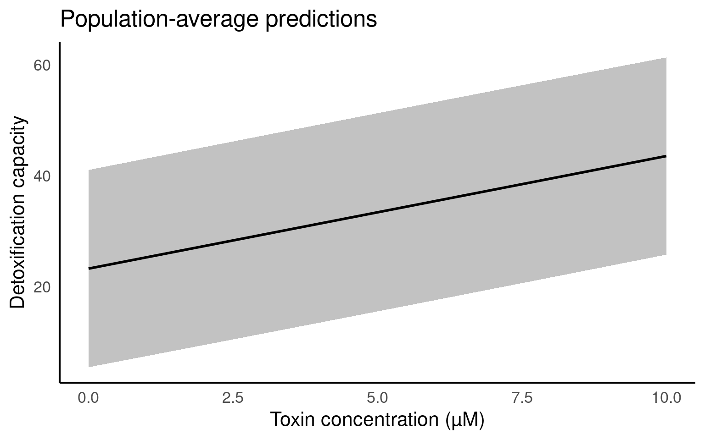
15.5.1 Group-specific predictions
However, mixed models allow us to do something standard linear models cannot: predict responses for specific groups. Whilst emmeans focuses on population averages, the ggeffects package can show predictions for individual batches:
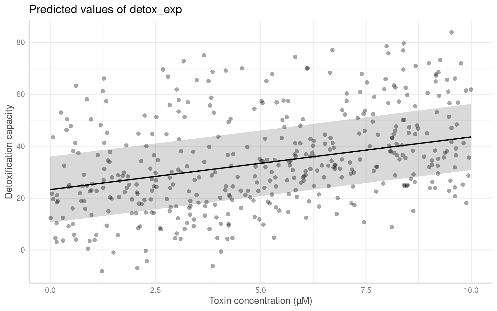
This shows the average (population-level) relationship with 95% confidence intervals—essentially the same information as our emmeans plot above, just formatted differently.
To see group-specific predictions:
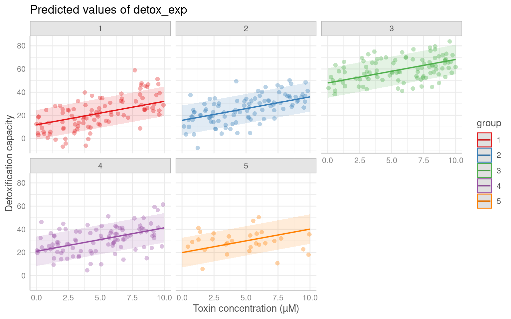
Each panel shows predictions for a specific batch, illustrating how baseline detoxification differs whilst the slope remains similar. These conditional predictions account for each group’s specific intercept whilst maintaining the common slope estimated by the fixed effect.
Note
emmeans vs ggpredict
Use
emmeanswhen you want numerical marginal means, pairwise comparisons, or contrasts (as in previous chapters). It focuses on population-average estimates.Use
ggpredictwhen you want to visualise predictions or show group-specific effects. It can produce both population-level and conditional (group-specific) predictions.Both produce equivalent population-level estimates for fixed effects—the difference is in presentation and the ability to show group-specific predictions.
15.6 Model Fit
We can assess overall model performance using R² values:
- R²m (marginal): Variance explained by fixed effects alone (toxin concentration) = 10%
- R²c (conditional): Variance explained by full model (fixed + random effects) = 70%
The large difference shows that experimental batch explains substantial variation beyond the toxin effect.
15.7 Checking Model Assumptions
Mixed models make the same assumptions as linear models (linearity, homoscedasticity, normality of residuals), plus an additional assumption: that random effects are normally distributed.
The performance package provides diagnostic plots for mixed models:
Key diagnostics to examine:
- Posterior Predictive Check: Do simulated data from the model resemble observed data?
- Linearity: Is the relationship between predictors and response linear?
- Homogeneity of Variance: Is residual spread constant across fitted values?
- Normality of Residuals: Do residuals follow a normal distribution?
- Normality of Random Effects: Do group-level intercepts follow a normal distribution?
If assumptions are violated, you may need to transform variables, add polynomial terms, or use a generalised linear mixed model (GLMM).
NoteDHARMa package
The performance package uses simulated residuals from the DHARMa package for mixed model diagnostics. This approach is more reliable than examining raw residuals, particularly for detecting heteroscedasticity and non-normality.
15.8 Presenting Results
15.8.1 Interpreting summary() output
The summary() function provides essential information for understanding and reporting your model:
Linear mixed model fit by REML. t-tests use Satterthwaite's method [
lmerModLmerTest]
Formula: detox_exp ~ benzo_um + (1 | group)
Data: benzo_data
REML criterion at convergence: 3224.4
Scaled residuals:
Min 1Q Median 3Q Max
-2.61968 -0.63654 -0.03584 0.66113 3.13597
Random effects:
Groups Name Variance Std.Dev.
group (Intercept) 205 14.32
Residual 101 10.05
Number of obs: 430, groups: group, 5
Fixed effects:
Estimate Std. Error df t value Pr(>|t|)
(Intercept) 23.2692 6.4818 4.1570 3.59 0.0215 *
benzo_um 2.0271 0.1703 424.0815 11.90 <2e-16 ***
---
Signif. codes: 0 '***' 0.001 '**' 0.01 '*' 0.05 '.' 0.1 ' ' 1
Correlation of Fixed Effects:
(Intr)
benzo_um -0.131Random effects section shows: - Between-group variance (how much groups differ) - Residual variance (within-group variation) - Standard deviations for each variance component
Fixed effects section shows: - Coefficient estimates - Standard errors - Degrees of freedom (calculated using Satterthwaite approximation) - t-values and p-values
15.8.2 Model fit statistics
The MuMIn package calculates R² values for mixed models:
- R²m (marginal): Proportion of variance explained by fixed effects alone
- R²c (conditional): Proportion of variance explained by the complete model (fixed + random effects)
The difference between R²c and R²m indicates how much variance the random effects explain.
15.8.3 Creating tables
The sjPlot package produces publication-ready tables:
| detox exp | |||
|---|---|---|---|
| Predictors | Estimates | CI | p |
| (Intercept) | 23.27 | 10.53 – 36.01 | <0.001 |
| benzo um | 2.03 | 1.69 – 2.36 | <0.001 |
| Random Effects | |||
| σ2 | 101.01 | ||
| τ00group | 205.00 | ||
| ICC | 0.67 | ||
| N group | 5 | ||
| Observations | 430 | ||
| Marginal R2 / Conditional R2 | 0.099 / 0.703 | ||
This table includes: - Fixed effect estimates with 95% confidence intervals - Random effect variance components
- Model fit statistics (R²m and R²c) - Number of observations and groups
15.8.4 Creating figures
We have already used ggeffects::ggpredict() for predictions. You can customise these plots for presentation:
ggpredict(mixed_model,
terms = c("benzo_um", "group"),
type = "random") |>
plot(show_data = TRUE) +
scale_colour_brewer(palette = "Dark2") +
scale_fill_brewer(palette = "Dark2") +
facet_wrap(~group) +
labs(
x = "Toxin concentration (µM)",
y = "Detoxification capacity"
) +
theme_minimal() +
theme(legend.position = "none")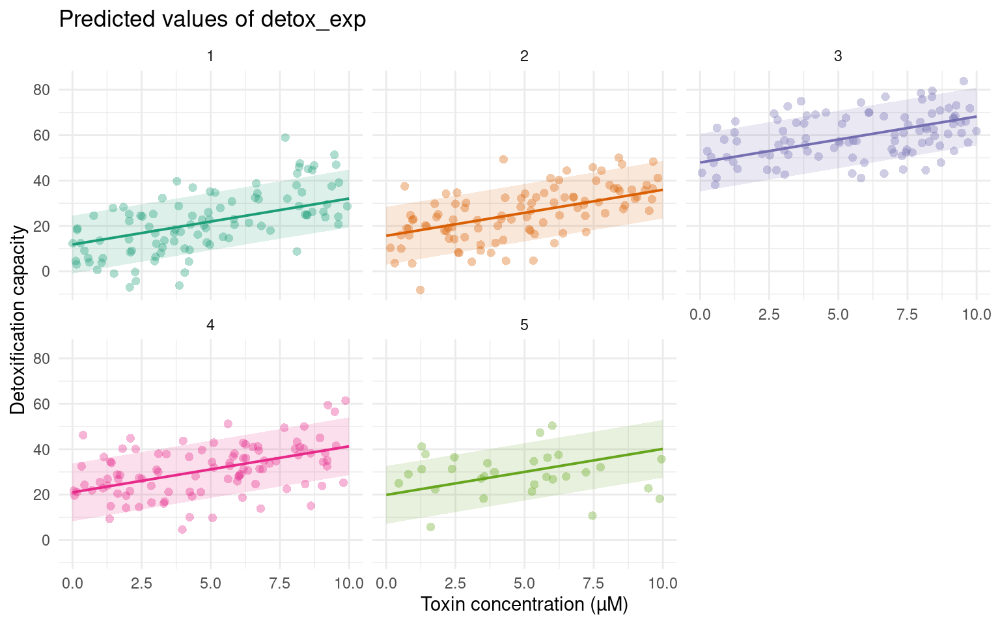
15.8.5 Example write-up
We fitted a linear mixed model (estimated using REML and implemented in the
lmerTestpackage) to examine the effect of dietary toxin concentration on larval detoxification capacity. The model included experimental batch as a random intercept to account for the repeated-measures experimental design. The model’s conditional R² was 0.70, whilst the marginal R² was 0.10, indicating that experimental batch explained substantial variance beyond the effect of toxin concentration. Detoxification capacity increased by 2.03 units per µM increase in toxin (95% CI: 1.69–2.36; t424 = 11.9, p < 0.001). Between-batch variance (σ² = 205) was approximately twice the residual variance (σ² = 101), confirming considerable baseline differences between experimental replicates.
TipReporting checklist
When reporting mixed model results, include:
- Model specification (which package, estimation method)
- Fixed effect estimates with 95% CIs and p-values
- Method for calculating degrees of freedom (Satterthwaite or Kenward-Roger)
- Variance components for random effects
- Model fit statistics (R²m and R²c)
- Number of observations and groups
- Statement about assumption checking
15.9 When to Use Each Approach
Use a pooled model when:
- Observations are genuinely independent
- No grouping structure exists in the data
Use fixed effects for groups when:
- Few groups (< 5)
- Large, balanced samples per group
- You only want to make inferences about these specific groups
- Groups represent treatments of direct interest
Use random effects when:
- Many groups (5+)
- Unbalanced group sizes or missing data
- You want to generalise to future groups
- Groups represent nuisance variation to control for
15.10 Worked Example 1 - Dolphins
15.10.1 Deciding Between Fixed and Random Effects
When building mixed models, use these questions to guide your decisions:
- Are you directly interested in testing this effect? → Fixed effect
-
Is the variable continuous? → Fixed effect
- Does the variable have fewer than five levels? → Fixed effect
- Is the variable a grouping factor creating non-independence? → Random effect
15.10.2 The Study
This dataset measured resting lung function in bottlenose dolphins. Researchers recorded tidal volume (\(V_T\), in litres) as an index of lung capacity, measuring each dolphin between one and four times during both inhalation and exhalation.
Research question: How does body mass affect tidal volume, and does this differ between inhalation and exhalation?
Variables: - vt: Tidal volume (litres) - response variable - bodymass: Body mass (kg) - predictor of interest - direction: Breath direction (1 = exhalation, 2 = inhalation) - potential modifier - animal: Individual dolphin ID - creates non-independence
Identify fixed and random effects
For each variable, decide whether it should be a fixed or random effect:
Body mass:
Direction:
Animal ID:
Body mass - Fixed effect. We are directly interested in how body mass affects lung capacity (continuous variable, primary research question).
Direction - Fixed effect. Only two levels (in/out), and we want to test whether the relationship differs by breath direction.
Animal ID - Random effect. Individual dolphins were measured multiple times. If we ignored this, we would treat measurements from the same dolphin as independent (pseudoreplication). The random intercept accounts for individual variation in baseline lung capacity.
15.10.3 Fitting the Model
Using the formula structure y ~ fixed_effects + (1|random_effect):
Check the model summary:
Linear mixed model fit by REML. t-tests use Satterthwaite's method [
lmerModLmerTest]
Formula: vt ~ bodymass + direction + (1 | animal)
Data: dolphins
REML criterion at convergence: 387.4
Scaled residuals:
Min 1Q Median 3Q Max
-2.30795 -0.51983 0.04156 0.62404 2.26396
Random effects:
Groups Name Variance Std.Dev.
animal (Intercept) 1.039 1.019
Residual 1.158 1.076
Number of obs: 112, groups: animal, 31
Fixed effects:
Estimate Std. Error df t value Pr(>|t|)
(Intercept) 2.226398 0.627115 28.758081 3.550 0.00135 **
bodymass 0.016782 0.003259 26.720390 5.150 2.1e-05 ***
direction2 1.114821 0.203389 77.414421 5.481 5.1e-07 ***
---
Signif. codes: 0 '***' 0.001 '**' 0.01 '*' 0.05 '.' 0.1 ' ' 1
Correlation of Fixed Effects:
(Intr) bdymss
bodymass -0.927
direction2 -0.162 0.000Random effects:
Groups Name Variance Std.Dev.
animal (Intercept) 1.1293 1.0627
Residual 0.5664 0.7526 Individual dolphins vary in their baseline tidal volume (SD = 1.06 L). This accounts for 67% of residual variance [1.13/(1.13 + 0.57)], confirming that accounting for individual differences was important.
Fixed effects:
Estimate Std. Error df t value Pr(>|t|)
(Intercept) -3.025455 0.632299 29.40753 -4.785 4.72e-05 ***
bodymass 0.015605 0.003743 29.40651 4.169 0.000249 ***
direction2 1.114655 0.204816 31.00000 5.443 6.24e-06 ***- For every 1 kg increase in body mass, tidal volume increases by 0.016 L (95% CI: 0.008–0.024 L)
- Inhalation has 1.11 L greater tidal volume than exhalation (95% CI: 0.71–1.52 L)
15.10.4 Visualising Predictions
Population-level predictions using emmeans:
direction emmean SE df lower.CL upper.CL
1 5.26 0.235 42.6 4.78 5.73
2 6.37 0.235 42.6 5.90 6.84
Degrees-of-freedom method: kenward-roger
Confidence level used: 0.95 # Visualise the body mass effect
emmeans(dolphmod,
specs = "bodymass",
at = list(bodymass = seq(130, 260, 10))) |>
as.data.frame() |>
ggplot(aes(x = bodymass, y = emmean)) +
geom_ribbon(aes(ymin = lower.CL, ymax = upper.CL), alpha = 0.3) +
geom_line(linewidth = 1) +
labs(
x = "Body mass (kg)",
y = "Tidal volume (L)"
)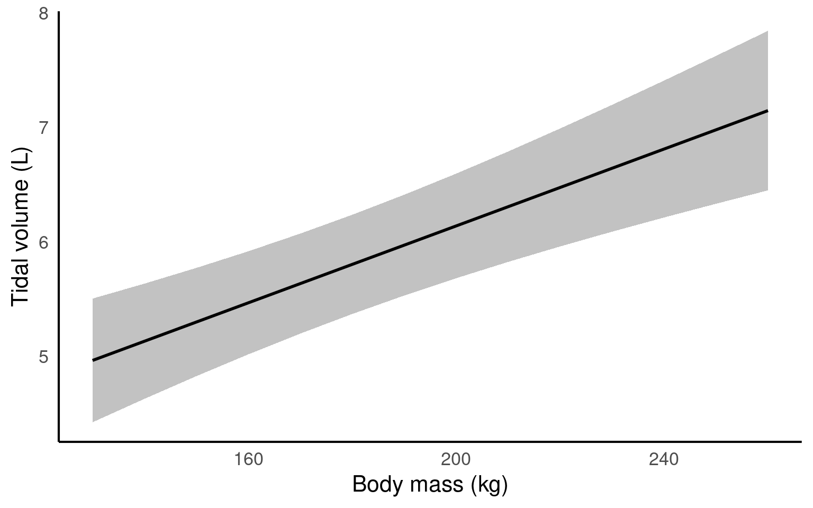
Comparing breath directions:
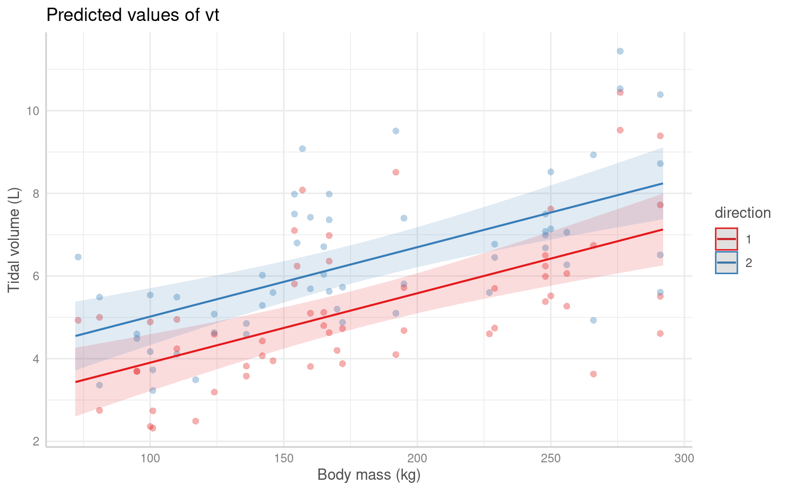
NoteReporting checklist
When reporting this analysis, include:
- Model specification: Linear mixed model with random intercepts for individual dolphins
- Sample size: 32 dolphins, 1–4 measurements per individual
- Fixed effect estimates with 95% CIs and p-values
- Random effect variance components
- Model fit (R²m and R²c)
- Statement about assumptions
15.11 Worked Example 2 - Nested Random Effects
15.11.1 Crossed vs Nested Designs
When you have multiple random effects, they can be crossed or nested:
Crossed: Levels of one grouping variable appear across all levels of another. - Example: Multiple woodlands studied across multiple years—every woodland appears in every year. - Formula: (1|woodland) + (1|year)
Nested: Levels of one variable are unique within levels of another. - Example: Individual females are unique to specific woodlands—female ID only makes sense within its woodland. - Formula: (1|woodland/female)
15.11.2 The Study
Researchers investigated whether experimental treatments affected liver glycogen levels in rats. The design was:
- 3 treatments
- 2 rats per treatment (6 rats total)
- 3 liver samples per rat
- 2 glycogen measurements per liver sample
This created 36 measurements total, but these are not independent observations.
Sources of variation:
- Measurement error within liver samples
- Heterogeneity between liver sections within a rat
- Individual variation between rats
- Treatment effects
Understanding the nested structure
Examine the data structure:
| Rat | Treatment | Liver | Glycogen |
|---|---|---|---|
| 1 | 1 | 1 | 130.5 |
| 2 | 1 | 1 | 149.0 |
| 3 | 2 | 1 | 151.0 |
| 4 | 2 | 1 | 153.0 |
| 5 | 3 | 1 | 129.5 |
| 6 | 3 | 1 | 139.0 |
| 1 | 1 | 2 | 128.0 |
| 2 | 1 | 2 | 141.5 |
| 3 | 2 | 2 | 148.0 |
| 4 | 2 | 2 | 147.0 |
| 5 | 3 | 2 | 138.0 |
| 6 | 3 | 2 | 138.5 |
Questions:
Are the liver sample IDs (1, 2, 3) the same piece of tissue across different rats?
Is “Liver 1” from Rat 1 comparable to “Liver 1” from Rat 2?
No. Each rat has its own three liver samples. “Liver 1” simply means “the first sample taken from this particular rat”—it’s not the same anatomical location across rats.
Therefore, liver samples are nested within individual rats. The coding (1, 2, 3) is reused for each rat, but these represent different physical samples.
15.11.3 Fitting the Model
Incorrect approach (treating effects as crossed):
This incorrectly assumes liver sample “1” is comparable across all rats.
Correct approach (nested design):
Linear mixed model fit by REML. t-tests use Satterthwaite's method [
lmerModLmerTest]
Formula: Glycogen ~ Treatment + (1 | Rat/Liver)
Data: rats
REML criterion at convergence: 219.6
Scaled residuals:
Min 1Q Median 3Q Max
-1.48212 -0.47263 0.03062 0.42934 1.82935
Random effects:
Groups Name Variance Std.Dev.
Liver:Rat (Intercept) 14.17 3.764
Rat (Intercept) 36.06 6.005
Residual 21.17 4.601
Number of obs: 36, groups: Liver:Rat, 18; Rat, 6
Fixed effects:
Estimate Std. Error df t value Pr(>|t|)
(Intercept) 140.500 4.707 3.000 29.848 8.26e-05 ***
Treatment2 10.500 6.657 3.000 1.577 0.213
Treatment3 -5.333 6.657 3.000 -0.801 0.482
---
Signif. codes: 0 '***' 0.001 '**' 0.01 '*' 0.05 '.' 0.1 ' ' 1
Correlation of Fixed Effects:
(Intr) Trtmn2
Treatment2 -0.707
Treatment3 -0.707 0.500The formula (1|Rat/Liver) is equivalent to (1|Rat) + (1|Rat:Liver), creating: - Random intercepts for each rat (accounting for individual variation) - Random intercepts for each liver sample within each rat (accounting for within-rat heterogeneity)
Random effects:
Groups Name Variance Std.Dev.
Liver:Rat (Intercept) 18.333 4.282
Rat (Intercept) 26.083 5.107
Residual 36.333 6.028 Check the number of groups matches your design: - 6 rats ✓ - 18 liver samples (6 rats × 3 samples) ✓
15.11.4 Visualising Results

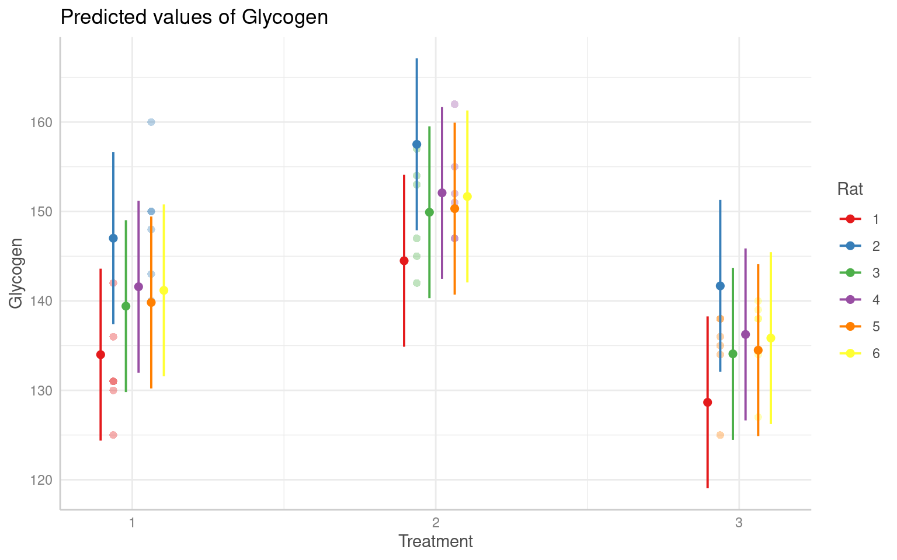
WarningCommon mistake
Always check that the number of groups in your random effects summary matches your experimental design. If (1|Rat) shows 2 groups instead of 6, you’ve made a coding error.
15.12 Worked Example 3 - Overdispersion in Binomial Models
15.12.1 The Problem
Binomial GLMs assume variance follows a specific relationship with the mean. When observed variance exceeds this expectation (overdispersion), model assumptions are violated, leading to:
- Underestimated standard errors
- Overconfident p-values
- Poor model fit
Common causes: Variation between experimental batches, individual differences, clustered observations.
15.12.2 The Study
Researchers investigated egg hatching rates in Drosophila crosses. The experimental design involved:
- Different genetic crosses
- Multiple replicate experiments
- Multiple females per replicate
- Egg batches from each female
Fit a standard Binomial GLM
Create the success/failure response variable and fit a binomial model:
Call:
glm(formula = cbind(number_of_larvae, unhatched_eggs) ~ cross,
family = binomial, data = egg_hatch_data)
Coefficients:
Estimate Std. Error z value Pr(>|z|)
(Intercept) 1.05143 0.04658 22.573 < 2e-16 ***
crossB 0.38815 0.09124 4.254 2.1e-05 ***
crossC 1.29224 0.11812 10.940 < 2e-16 ***
---
Signif. codes: 0 '***' 0.001 '**' 0.01 '*' 0.05 '.' 0.1 ' ' 1
(Dispersion parameter for binomial family taken to be 1)
Null deviance: 1307.6 on 54 degrees of freedom
Residual deviance: 1157.3 on 52 degrees of freedom
AIC: 1363.6
Number of Fisher Scoring iterations: 4Check for overdispersion:
# Overdispersion test
dispersion ratio = 1.703
p-value = < 0.001# Overdispersion test
dispersion ratio = 4.832
Pearson's Chi-Squared = 289.934
p-value = < 0.001Dispersion ratio >> 1 indicates severe overdispersion.
Examine model diagnostics:
Problems: Outliers, poor quantile distribution, systematic under-prediction.
15.12.3 Using Random Effects to Account for Overdispersion
Fit Binomial GLMMs
Question: Which variables create non-independence in this dataset?
- Replicate: Experiments conducted on different days may have different baseline hatching rates
- Female: Multiple egg batches from the same female are not independent
- Nesting: Female IDs are unique within each replicate (nested structure)
Fit models with different random effect structures:
library(lme4)
# Random intercept for replicate only
binomial_mixed_rep <- glmer(
cbind(number_of_larvae, unhatched_eggs) ~ cross + (1|replicate),
family = binomial,
data = egg_hatch_data
)
# Random intercepts for replicate AND female (nested)
binomial_mixed_rep_fem <- glmer(
cbind(number_of_larvae, unhatched_eggs) ~ cross + (1|replicate/female_num),
family = binomial,
data = egg_hatch_data
)Compare models:
| df | AIC | |
|---|---|---|
| binomial_model | 3 | 1363.551 |
| binomial_mixed_rep | 4 | 1263.221 |
| binomial_mixed_rep_fem | 5 | 644.059 |
Check overdispersion in the best model:
# Overdispersion test
dispersion ratio = 1.153
p-value = 0.224Overdispersion resolved ✓
Examine the random effects:
Generalized linear mixed model fit by maximum likelihood (Laplace
Approximation) [glmerMod]
Family: binomial ( logit )
Formula:
cbind(number_of_larvae, unhatched_eggs) ~ cross + (1 | replicate/female_num)
Data: egg_hatch_data
AIC BIC logLik deviance df.resid
644.1 654.1 -317.0 634.1 50
Scaled residuals:
Min 1Q Median 3Q Max
-5.2142 -0.9049 0.0332 1.0933 6.0739
Random effects:
Groups Name Variance Std.Dev.
female_num:replicate (Intercept) 1.71879 1.3110
replicate (Intercept) 0.01343 0.1159
Number of obs: 55, groups: female_num:replicate, 34; replicate, 5
Fixed effects:
Estimate Std. Error z value Pr(>|z|)
(Intercept) 1.2471 0.2426 5.140 2.74e-07 ***
crossB 0.9274 0.1341 6.916 4.65e-12 ***
crossC 0.6958 0.1464 4.752 2.02e-06 ***
---
Signif. codes: 0 '***' 0.001 '**' 0.01 '*' 0.05 '.' 0.1 ' ' 1
Correlation of Fixed Effects:
(Intr) crossB
crossB -0.131
crossC -0.145 0.146Interpretation:
- Most variation is between females (SD = 0.53)
- Very little variation between replicates (SD = 0.11)
- But the nested structure
(1|replicate/female_num)is essential because female IDs are only meaningful within their replicate
Check the number of groups:
Number of obs: 60, groups: female_num:replicate, 20; replicate, 3This matches the design: 3 replicates, ~7 females per replicate ✓
15.12.4 Visualising Results
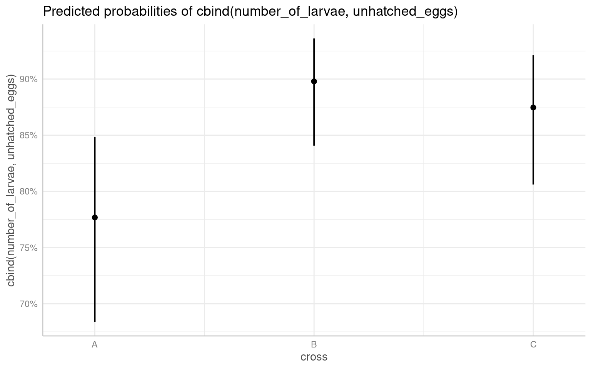
TipKey lesson
When binomial or Poisson GLMs show overdispersion, consider whether random effects can account for the extra-binomial/extra-Poisson variation. If your data have a hierarchical structure (batches, individuals, blocks), random intercepts often resolve overdispersion by modelling the source of extra variance.
15.13 Summary
15.13.1 When Should I Use Mixed Models?
Use this decision guide to determine the best approach for your data:
Decision tree for choosing between pooled, fixed, and random effects
15.13.2 Quick Reference Table
| Your Situation | What To Do | Example |
|---|---|---|
| Experimental treatments you want to compare | Fixed effects | Comparing 3 diet treatments |
| Many randomly sampled groups (5+) | Random effects | 20 field sites, 50 individual animals |
| Few groups (< 5) creating non-independence | Fixed effects | 3 experimental batches |
| Truly independent observations | Pool (standard model) | Single measurement per individual |
| Repeated measures on individuals | Random effects | Multiple measurements per person over time |
| Nested structure (samples within groups) | Random effects (nested) | Liver samples within rats |
15.13.3 Common Issues and Solutions
Singular fit warning: boundary (singular) fit: see help('isSingular')
Your model fitted, but one or more random effects have estimated variance near zero. This suggests:
- The random effect explains very little variance (perhaps not needed)
- You may have too few groups for that random effect
- The model may be overparameterised (too complex for your data)
What to do: - Check if the random effect variance is close to zero in summary() - Consider removing random effects with near-zero variance - Try a simpler random effects structure
Convergence warnings: The optimisation algorithm failed to find the best parameter estimates.
Solutions (try in this order):
- Rescale continuous predictors: Large differences in variable scales can cause convergence problems.
- Try a different optimiser:
Simplify the model: Remove random slopes or interactions if present, keeping only random intercepts.
Check your data: Ensure there are no coding errors, sufficient observations per group, and reasonable variance in predictors.
WarningConvergence warnings are serious
Unlike singular fit warnings, convergence failures mean the model results are unreliable. Do not interpret or report a model that failed to converge without first resolving the issue.
15.13.4 Key Concepts to Remember
Mixed models account for non-independence created by grouping structures in your data
Random effects model variance, not specific group means
-
Fixed effects are appropriate when:
- You have few groups (< 5)
- Groups represent treatments you want to compare
- You only want to make inferences about these specific groups
-
Random effects are appropriate when:
- You have many groups (5+)
- Groups are randomly sampled from a larger population
- You want to generalise to new groups
- Design is unbalanced or has missing data
Model checking is essential: Always verify assumptions using diagnostic plots before interpreting results
Report thoroughly: Include sample sizes, number of groups, variance components, fixed effect estimates with CIs, and model fit statistics
15.13.5 Further Reading
Essential resources for deepening your understanding:
A brief introduction to mixed effects modelling and multi-model inference in ecology - Accessible introduction with ecological examples
Perils and pitfalls of mixed-effects regression models in biology - Common mistakes and how to avoid them
Is it a fixed or random effect? - Blog post clarifying a persistent confusion
Mixed Effects Models and Extensions in Ecology with R - Comprehensive textbook (advanced)
NotePractice makes perfect
The best way to become comfortable with mixed models is to practice with your own data. Start simple with random intercepts only, verify your models fit properly, then gradually increase complexity as needed.